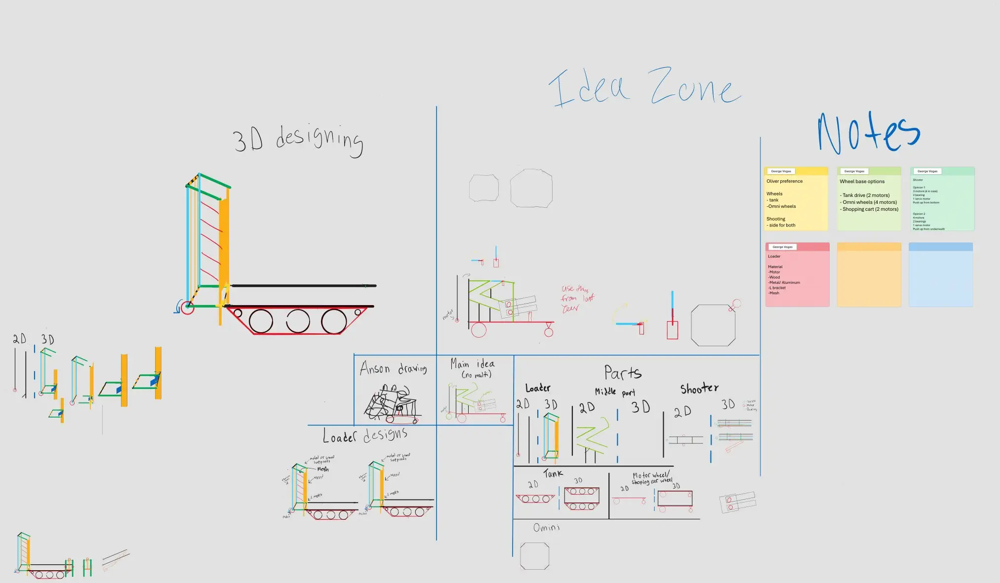
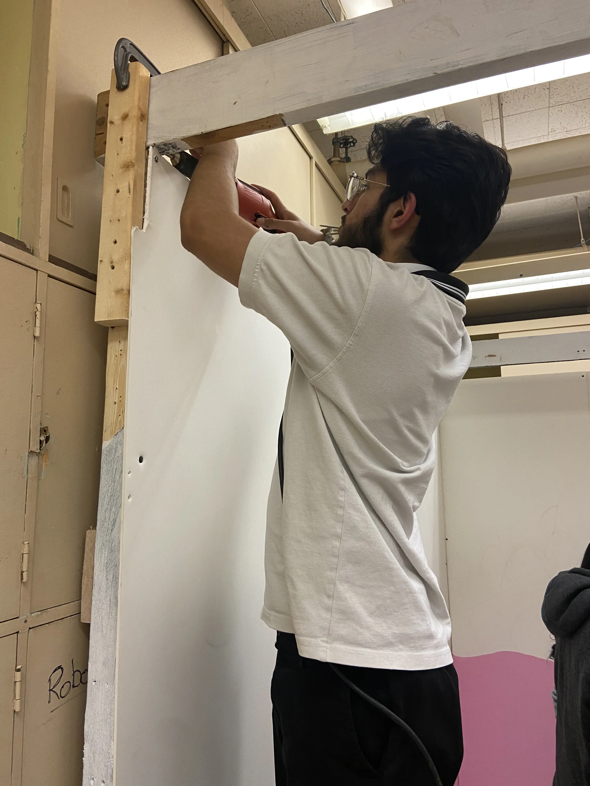
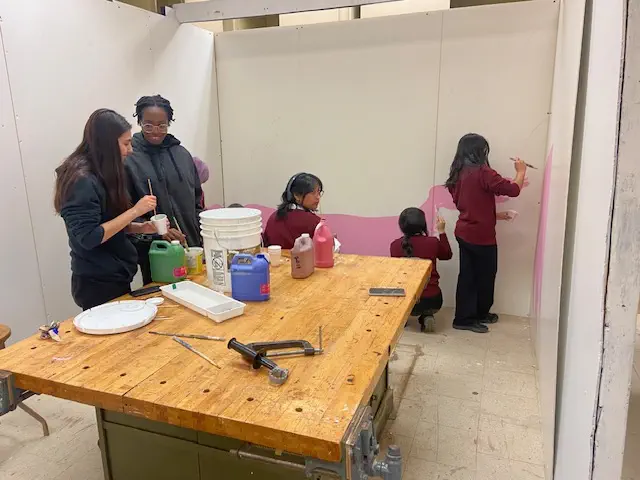
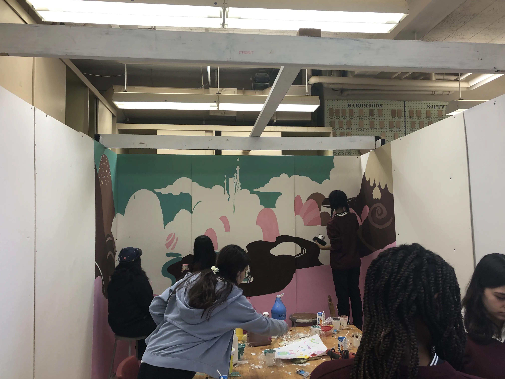
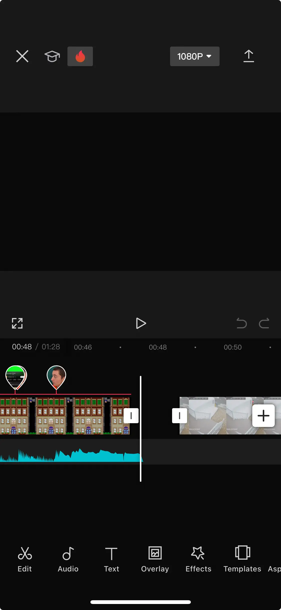

Journal
Robot
September
We tried out different wheels and bases to find the best fit for our pilot. This took some time since we had to think about whether we wanted ease of use or degrees of motion.
October
We decided to use last year’s base for the robot. Since this is our second year, knowing what we know now, we were able to make the right changes quicker and we knew what to prioritize and what to discard.
November
Kickoff!!! The Kickoff was great and we excitedly began planning and brainstorming ideas. After the initial brainstorming was complete we ordered parts and prepared for assembly.
December
In December is when we started building. The first prototypes we made were rough but after a bit of trial and error we got to a good design for the base.
January
This is when we started work on the ball pick-up mechanisms. We went through three prototypes before finally landing on the right one. In the meantime we were also working on shooting mechanisms.
February
As well as some finishing touches, everything is now assembled and (almost) ready to go. All we have to do now is fix up our wiring.
Programming
August
In August, significant updates were made to the website. We transitioned to an arcade-style theme, complete with a CRT screen effect, and introduced a color scheme predominantly comprised of black and blue. The addition of a pixelated font enhanced the retro aesthetic. Practical improvements included the incorporation of a readme file and adjustments to the font selection. Additionally, a .gitignore file was implemented to streamline version control processes.
October
In October, our efforts focused on enhancing the website's organization and visual appeal. We implemented a systematic approach, ensuring that every page served a distinct purpose. Transitioning from the previous arcade theme, we embraced a more vibrant candy aesthetic, unifying the color and theme across all pages for a cohesive experience. The introduction of dark mode/light mode options catered to diverse user preferences. Adding a fade-out transition between pages elevated the overall user experience, providing a seamless browsing journey. Additionally, we dedicated time to polishing existing features, refining elements such as headers, theme switchers, transitions, and image spacing and sizing. Yanni introduced a scoring feature, awarding 2 points per click and 10 points per link, enhancing user engagement. However, the theme switcher encountered issues, requiring extensive troubleshooting for the remainder of the month. Despite this setback, our commitment to quality and functionality remained unwavering as we worked diligently to resolve the issue and ensure a smooth user experience.
November
In November, our focus shifted towards refining the website's functionality and appearance. Addressing formatting issues, we improved the overall aesthetic appeal. Translation problems were resolved, including the removal of duplicate files associated with the French version. We also implemented automatic language detection based on system preferences. Theme switcher issues were rectified, enhancing user experience consistency. Julian recommended adding manual language change options, providing users with more control. Additionally, we streamlined the homepage and extended its features to other pages for uniformity. This involved adjustments to headers, theme switchers, and language options across the site. To optimize mobile browsing, we introduced a hamburger menu for smaller screens, ensuring ease of navigation on phones. These updates reflect our commitment to delivering a seamless and user-friendly website experience.
December
In December, our focus shifted towards setting up the roster section of the website. We introduced boxes displaying both people's names and faces, although descriptions were not yet included. Initially attempting to make the boxes clickable for additional information, we encountered difficulties, prompting us to make them hoverable instead. Despite these efforts, the functionality remained peculiar, and challenges persisted in achieving the desired interaction.
January & February
In January and February, we further developed the user experience on the website. This included, but was not limited to, multiple minor bug fixes. We also made adjustments to stylesheets and scaling of content on the website. Likewise, we added more team-member to our roster page, using placeholder icons for some. Lastly, we included more info one our journal page.
March
In March, we made the final changes to prepare our website for publication. As always, numerous bug fixes and quality of life changes. We significantly improved the journal, with much more detail, an improved Side Navbar, and images + videos. Finally, we made optimizations to the website to speed up load times and image serving.
Kiosk
December
After rebuilding the kiosk, we began sketching. We completed half of it before the break. We also planned the colors to be used.
January
We finished the sketch during this month. However, we couldn't start painting immediately because we lacked paint. Eventually, we painted the pink land and the base of the sky.
February
In February, we painted mountains and lakes, which were made out of chocolate, and added intricate details to them.
Media
August
In August we wrote the video script. The script was reviewed and rewritten multiple times with different plots to see what would work best within the canon of the original Wreck-It-Ralph story. Progress was delayed until we could find a costume for George.
January
In January we received the costumes.
February
Filming went smoothly. On Monday, Samir, George and Uzma started to film part 2 of the movie since Uzma had to leave for Bangladesh. We had a lot of fun filming this part of the movie. We had to do a lot of retakes because we were laughing a lot and we had people from the school interrupting us. In the last week of February Samir and George went all around Montreal filming in different places. We went to Saint Joseph's Oratory of Mount Royal, the tip of the Montreal island and filmed on the water. We took many different shots that will make the video look cool. We 3D printed props for the movie and we started filming the last parts of the movie and the editing started.
March
In March the team finished the video. We had to put together the video and edit the footage we had to make it all come together. We also got final shots of our main character, Ralph, played by George, working on our robot. It was actually quite challenging, with the dead-line looming over us.